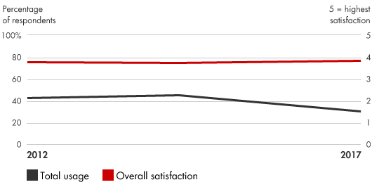
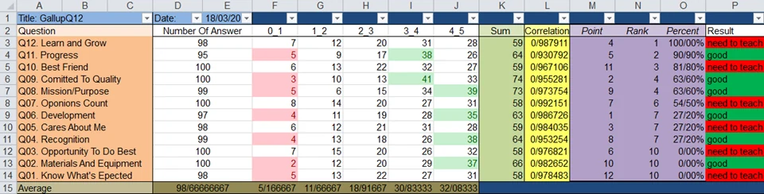

📘معرفی ابزار
مطالعات مربوط به مشارکت کارمندان این مسئله را تعیین میکند که کارکنان تا چه میزان با اشتیاق و انگیزه در سازمان مشغول به کار هستند. کارمندانی که از نظر فکری و عاطفی وابستگی بیشتری به سازمان داشته باشند، به جذب مشتریان وفادارتر و بهبود عملکرد کسبوکار کمک می کنند. این نظرسنجیها میزان دلبستگی کارکنان به کار، همکاران و سازمان را اندازهگیری کرده و به تعیین تمایل آنها برای فراتر رفتن از پارامترهای اصلی کارشان کمک میکند. این کار همچنین میتواند برای درک اینکه چه عواملی بیشترین تاثیر را بر تعامل کارکنان دارد و نیز برای پیشبینی حفظ کارمندان مورد استفاده قرار بگیرد. مشارکت کارکنان ارتباط بسیار زیادی با مشارکت مشتریان دارد و به روشهای مشابه اندازهگیری میشود.
🆕بهروزرسانی ۱۴۰۵
این بخش در نسخهٔ آنلاین ۱۴۰۵ افزوده شده است. متن اصلی کتاب (آبان ۱۳۹۹) در بخشهای بعد بدون تغییر آمده است.
آمار و شواهد تازه
- Gallup (گزارش ۲۰۲۶): مشارکت کارکنان در جهان در ۲۰۲۵ به ۲۰٪ رسید؛ پایینترین سطح از ۲۰۲۰ و دومین سال پیاپی کاهش. (منبع: Benefits and Pensions Monitor، Gallup)
- مشارکت مدیران از ۲۷٪ به ۲۲٪ افت کرد؛ بزرگترین افت سالانهٔ مدیران در این مجموعه داده. (منبع: Gallup)
- در گزارش ۲۰۲۵ هزینهٔ مشارکت پایین برای اقتصاد جهان حدود ۸٫۹ تریلیون دلار (نزدیک ۹٪ تولید ناخالص جهانی) برآورد شده بود. (منبع: Gallup)
چه چیزی تغییر کرده؟
نتیجهٔ کلیدی برای نظرسنجی مشارکت: مدیران میانی عامل اصلی افتاند؛ پس نتایج باید به سطح مدیر برگردد، با اقدامهای محلی همراه شود و نظرسنجی کوتاهتر و پرتکرارتر (نبض) در کنار پیمایش سالانه به کار رود.
نمونه ابزارها و نرمافزارهای امروزی
نامها صرفاً نمونهاند و توصیه یا تبلیغ تجاری نیستند؛ شرایط دسترسی و تحریمها را برای سازمان خود بررسی کنید.
منابع این بخش
🧩فرآیند اجرا
مطالعه مشارکت کارکنان به شرکتها کمک میکند تا نقاط قوت و استعدادهای نیروی کار خود شناسایی کنند تا به یک مزیت رقابتی در کسب و کار برسند. بدین منظور مدیران باید:
- انواع منابع دادهای را ارزیابی کنند تا محرکهای کلیدی مشارکت را درک کنند. منابع دادهای کلیدی اغلب شامل نظرسنجیهای بینام، انتقادات و پیشنهادات کارمندان، مدلسازی پیشبینی براساس بررسیهای قبلی، بحثهای عمیق با کارمندان در تمام سطوح و رسانههای اجتماعی میشود. محرکهای مشارکت معمولا شامل رضایت کارمندان در نتیجه کار، پاداشها، روابط، ارزشها، ماموریت، پایداری و محیط کار میشوند.
- محرکهای کلیدی مشارکت را به یک نظرسنجی کوتاه که به زمان کارمندان احترام بگذارد و بهترین خروجی را داشته باشد تبدیل کنید.
- نظرسنجیها را به اندازه کافی انجام دهید تا بتوانید یک جریان ثابت از اطلاعات در مورد سطوح درگیر و ایده هایی برای بهبود ایجاد کنید.
- اطمینان حاصل کنید که جلب مشارکت کارکنان یک اولویت مهم برای مدیران اصلی و حتی خود کارمندان باشد. دستورالعملهای قابلاطمینانی برای پاسخ سریع به بازخوردها و پیدا کردن راهحلهایی برای مسایل کلیدی تهیه کنید.
💼موارد استفاده در کسبوکار
- ایجاد بهرهوری بیشتر همراه با حسی از هدف و استقلال، و همچنین وابستگی قوی با شرکت و خدمات آن
- ایجاد محیطی ایمن از نظر عاطفی، با سازوکارهای مناسب برای انجام کار در ازای جبران منصفانه
- شناخت موارد سرمایهگذاری با بیشترین تاثیر بر افزایش مشارکت کارکنان
- بدست آوردن مشتریان راضی و وفادار با بهبود مشارکت کارکنان و عملکرد کلی کسبوکار
- حفظ نیروی کار، کاهش هزینههای جابجایی و آموزش
📈میزان محبوبیت در طی زمان

🧪نمونه ابزار / الگو

یکی از ابزارهای مفید قابل استفاده برای سنجش سطح مشارکت کارمندان، شاخص گالاپ [۱] است که شامل 12 سئوال کلیدی است و از ابعاد مختلف میزان مشارکت کارمندان در سازمان را اندازه گیری میکند.
⬇️چکلیست قابلدانلود
چکلیست اجرایی این ابزار را دانلود و در سازمان خود تکمیل کنید. گامها از فرآیند اجرای همین صفحه برداشته شدهاند و ستونهای مسئول، موعد و وضعیت برای پیگیری تیمی خالی گذاشته شده است.
⬇ دانلود چکلیست (Word) · مطالعه مشارکت کارمندان📚مراجع مطالعه بیشتر
- Gallup Q12 Index, https://q12.gallup.com/public/en-us/Features
- Bain & Company, Employee Engagement Surveys:
- www.bain.com/insights/management-tools-employee-engagement-surveys
- Borg, Ingwer, and Paul Mastrangelo. Employee Surveys in Management: Theories, Tools, and Practical Applications. Hogrefe & Huber Publishers, 2008.
- Church, Allan H., and Janine Waclawski. Designing and Using Organizational Surveys: A Seven-Step Process. Pfeiffer, 2001.
- Finnegan, Richard P. The Power of Stay Interviews for Engagement and Retention. Society for Human Resource Management, 2012.
- Macey, William H., Benjamin Schneider, Karen M. Barbera, and Scott A. Young. Employee Engagement: Tools for Analysis, Practice, and Competitive Advantage. Wiley-Blackwell, 2009.
- MacLeod, David, and Chris Brady. The Extra Mile: How to Engage Your People to Win. Financial Times Management, 2008.